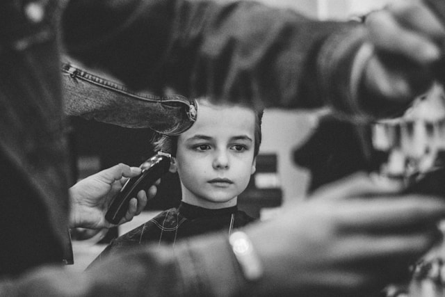
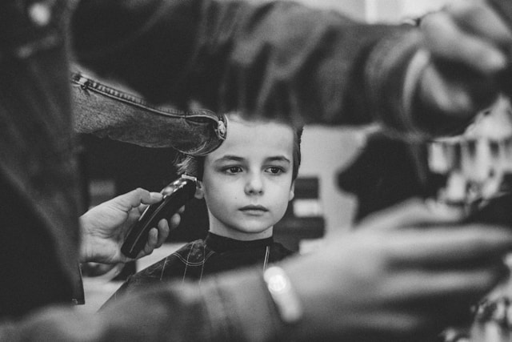

Bienvenido a Barberia Estilo Fino
Aquí, cada corte es una obra de arte y cada cliente es parte de nuestra familia. Nuestro equipo de barberos apasionados está listo para ofrecerte un servicio excepcional en un ambiente relajado y acogedor. Desde cortes clásicos hasta estilos modernos, nos aseguramos de que salgas luciendo y sintiéndote genial. Disfruta de una experiencia única con un buen café y la mejor atención personalizada. En Barberia estilo fino, no solo cortamos cabello, creamos confianza y estilo.
¡Ven y vive la experiencia de un verdadero cuidado masculino! Te esperamos.


 
